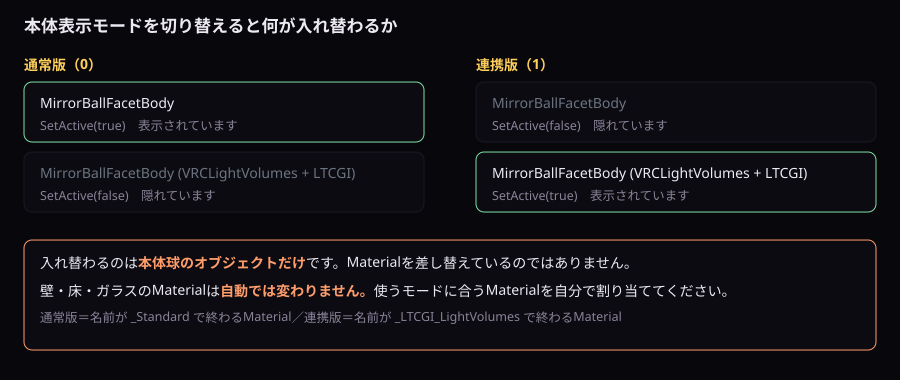

LTCGI・VRCLightVolumes・アバター実光
統合Prefab内で本体を切り替え、対応Materialとシーン側コンポーネントを接続します。
通常版と連携版
Packages/red.sim.lightvolumes/Shaders/LightVolumes.cginc と Packages/at.pimaker.ltcgi/Shaders/LTCGI_structs.cginc を直接includeするため、後から導入するとImport時にShaderのコンパイルエラーが出ます。Tools > MirrorBall Light > 診断・最適化 が最初の行で依存Packageの有無とバージョンを表示します。未導入の場合は原因と対処も表示します。| モード | 本体 | Surface Material |
|---|---|---|
| 通常版 |
MirrorBallFacetBody
|
名前が_Standardで終わる付属Material |
| LTCGI・VRCLightVolumes版 |
MirrorBallFacetBody (VRCLightVolumes + LTCGI)
|
名前が_LTCGI_LightVolumesで終わる付属Material |

Controllerの「本体表示モード」は本体球だけを切り替えます。壁・床・ガラスのMaterialは自動差し替えされないため、使用モードに合うMaterialを割り当てます。
動作確認済みの組み合わせ
下の表が実際に検証した実績です。受理する範囲と、確かめた実績は別のものです。 受理する範囲のほうが広く取ってあります。
| VRCLightVolumes | LTCGI | コンパイル確認 | 実機目視（PC） |
|---|---|---|---|
| 2.1.3 | 1.7.2 | 済 | 済 |
| 3.0.0-dev.15 | 1.7.3 | 済 | 済 |
| 未導入 | 未導入 | 済 | 済 |
コンパイル確認と実機での見え方は別のものです。 コンパイル確認はUdonSharpの変換とShaderのコンパイルにエラーが出ないことを見たもので、実機目視は代表的なシーンを見たものです。どちらも全機能を網羅した確認ではありません。
過去の版まで含めた全体の記録と、各行の但し書きはGitHub版マニュアルにあります。そちらが正です。
VRCLightVolumes
連携Shaderの「VRCLightVolumesを使用」はLight Volumeからの照明をSurface／本体へ反映するKeywordです。Controllerの「すべてON」で対応MaterialのKeywordも同時に設定します。
- VRC Light Volumesをプロジェクトへ導入します。
- シーンへ必要なLight Volume Manager／Volumeを配置してBakeまたは設定します。
- 連携Materialを対象Rendererへ割り当てます。
- Controllerの本体表示モードを連携版へ変更します。
- 9番の「すべてON」を押し、設定を保存します。
ワールド法線の反映
VRCLightVolumes 3.x環境では、LightVolumeSHへワールド法線を渡すようになり、法線方向に応じたライト・シャドウ評価が通常面・透過面・本体ファセットへ反映されます。曲面や斜面での陰影がより自然になりますが、Material設定や導入手順に変更はありません。VRCLightVolumes 2.x環境では従来の5引数APIのまま動作するため、導入側で意識する必要はありません。
LTCGI
| Material項目 | 効果 |
|---|---|
| LTCGIを使用 | LTCGI連携処理を有効にします。 |
| LTCGI拡散色 | LTCGIのDiffuse寄与へ掛ける色です。 |
| LTCGI反射色 | Specular寄与へ掛ける色です。 |
LTCGI側で対象Rendererを登録し、LTCGIの手順に従ってBake／Updateします。ControllerのONだけではLTCGIデータそのものは生成されません。
アバターへの実光
Realtime Light方式
ControllerへPoint Lightを1灯割り当てます。「安全設定」ボタンでRealtime、影なしへ設定し、Rangeを必要最小限にします。PC向けで、ワールド全体のRealtime Light数に注意します。
VRCLightVolumes方式
DynamicなPoint Light Volumeを別の子GameObjectとして構成し、「VRCLightVolumes用オブジェクト」へ指定します。Controllerは電源フェードに合わせてGameObjectの有効状態を管理します。
設定済みサンプルを連携版へ変更
- LTCGIとVRC Light Volumesを先に導入します。
- Controllerの「本体表示モード」を「LTCGI・VRCLightVolumes版」へ変更します。
-
mirrorball_light_wallへReflectionSurface_LTCGI_LightVolumesを割り当てます。 - 「対象マテリアルをシーンから自動検出」を実行します。
- 「すべてON」と「現在の設定をマテリアルへ反映・保存」を押します。
- 各連携パッケージ側のシーン設定を完了します。